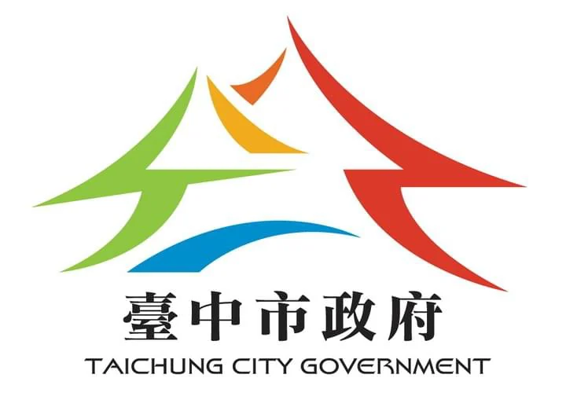

大家好，我是彭其捷，處理數據議題已經 15 年，目前出版了 12 本著作（多本已改版更新），其中《大數據時代必學的超吸睛視覺化工具與技術：Excel+Tableau 成功晉升資料分析師》已超過 15 刷，並被許多大專院校選為指定教科書。
我熱愛分享，曾在超過 200 個單位進行演講與教學，包括 Line、聯發科、鴻海、Momo、精誠、KKday、中研院、工研院、資策會、金融研訓院等，目前也是台灣大學資料分析與決策社導師，並成立〈知識遊牧工作室〉教學團隊，持續推廣 AI、資料應用與資料視覺化。
數據分析應該是幫助我們做出優秀決策的好朋友，而不是少數人的獨家技術。不論是工作挑戰或生活決策，只要有好的工具與數據分析的基礎概念，就能帶來巨大的好處——AI 的興起更讓這件事變得前所未有地容易。

曾擔任數據分析師、數據專案經理、前端工程師、使用者體驗顧問，每天都享受 Problem-Solving 的過程。
從資料到決策、從工具到思維，串連數據分析的完整學習路徑。
全球頂尖的商業資料視覺化工具，累積超過百小時教學經驗，涵蓋基礎入門到進階分析。
從科普、管理到技術多角度切入，聚焦職場生產力應用工作坊，讓 AI 成為工作助力。
大數據與數據決策概念、資料視覺化實務應用，建立人人可上手的數據決策框架。
介面設計流程與方法、設計思考導入執行，打造貼近使用者的產品體驗。
於 Hahow 好學校開設，累計超過 5,500 名學員、4.9 平均評分。另於新商業學校、天地人學堂、YOTTA 等平台開課。


更多課程主題與開課資訊 → Hahow 講師頁
來自 Hahow 255 則課程評價的真實回饋，平均 4.9 顆星。
課程編排清楚、學習無負擔，每一章節搭配實作一步步詳細解說；教材結合時事，讓我對視覺化圖表更有感覺。老師以深入淺出的方式教導數據分析的基本概念，不用刻意背誦。
透過大數據實戰練習，架設出豐富的儀表板介面，讓我初步瞭解 Tableau 基本運作架構及使用方式，課程真的是物超所值！
這堂課不只包含 Excel，還包含 VBA、Colab 及 App Script——不一定要會寫程式，而是讓 ChatGPT 幫你寫程式。讓我們自己駕馭 ChatGPT，而不是被 ChatGPT 駕馭。上完深深體會自己已經超越自己。
每個問題皆附有建議作法，能大幅降低自學時的困難與挫折。課程內容不算困難，但濃縮了許多可延伸的進階知識，讓我不知不覺為「待閱讀清單」新增了不少項目。
這門課不是著重於工具操作，而是傳授視覺化的製作心法——執行流程、圖表選擇、細節與注意事項，對我來說都是很大的啟發！Canva 的製圖能力也讓我大開眼界。
紮實的理論基礎與友善的手把手教學。很喜歡「常見錯誤」與「設計靈感」的課程架構，非常實用！原來以前有些圖表都用錯了。
2014 年至今出版 12 本著作，橫跨資料視覺化、Tableau、Excel、AI、UI/UX、前端與線上教學領域，多本經典持續改版更新。



以及 Line・聯發科・鴻海・HP・Trip.com・3M・Momo・元大證券・統一集團・精誠資訊・趨勢科技・富邦金控・國泰金控・中國信託・凱基金控・開發金控・裕隆・緯創・104・台大／清大／政大／師大／北科大 等超過 200 個單位


於 tableau.tw 部落格持續分享資料視覺化與 AI 協作的實戰筆記。
曾擔任多個組織與單位顧問，主軸方向：生成式 AI 導入、數據分析與視覺化、Tableau 導入、UIUX 體驗設計。
協助企業與團隊把生成式 AI 真正接進既有工作流程：從盤點高價值場景、設計 Prompt 與人機協作 SOP，到導入 Agent／自動化並建立成效檢核，讓 AI 從「會聊天」變成日常產能。曾於台灣人工智慧學校多次演講與教學。
擅長各類資料分析與視覺化議題，透過體驗設計的技巧挖掘數據洞見，協助團隊建立看得懂、用得上的數據決策流程。
協助多項專案導入 Tableau 工具或是大型數據系統，並擔任計畫顧問與委員等；目前持續在台灣推廣 Tableau 工具當中。
曾參與多項大型系統介面與體驗設計專案，擅長領域：前端工程、行動版本網頁設計、使用者經驗測試方法、設計思考教練等。
依據需求提供三種合作形式，由知識遊牧工作室團隊支援課程設計與教材製作。
AI 生產力、數據分析、Tableau、資料視覺化、UX 等主題客製課程，2 小時演講到多日工作坊皆可規劃，支援實作演練與作業回訓。
研討會主題演講、大專院校講座、公開班課程。主題涵蓋 AI 趨勢、數據思維、視覺化敘事，可依聽眾背景調整深度。
Tableau 工具導入、數據分析與視覺化流程建置、系統 UI/UX 設計、企業 AI 導入策略——陪伴團隊把數據變成決策。
Tableau 工具導入、數據分析與視覺化、系統 UI/UX 設計、人工智慧導入——歡迎來信洽談。